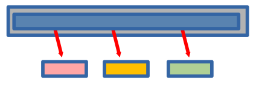

{kind=link}
%%{init: {
'flowchart': {
'nodeSpacing': 45,
'rankSpacing': 55,
'useMaxWidth': false,
'htmlLabels': true
},
'themeVariables': {
'fontSize': '18px'
}
}}%%
flowchart LR
Start([Start]) --> UI[Streamlit: Collect input]
UI --> Validate{Input Provided?}
Validate -->|No| Warn[Show warning]
Warn --> UI
Validate -->|Yes| BuildQR[Create QRCode object]
BuildQR --> EnsureDir[Output dir exists?]
BuildQR --> RenderQR[Render QR image]
EnsureDir --> UniqueName[ Create unique filename]
RenderQR --> UniqueName
UniqueName --> Save[Save PNG]
Save --> Display[Display in app]
Display --> Done([Done])
classDef startEnd fill:#27AE60,stroke:#229954,stroke-width:4px,color:#fff
classDef decision fill:#3498DB,stroke:#2874A6,stroke-width:4px,color:#fff
classDef process fill:#9B59B6,stroke:#7D3C98,stroke-width:4px,color:#fff
classDef output fill:#E74C3C,stroke:#C0392B,stroke-width:4px,color:#fff
class Start,Done startEnd
class Validate decision
class UI,BuildQR,RenderQR,EnsureDir,UniqueName process
class Warn,Save,Display output
Building a QR Code Creator
A Professional Python + UV + Streamlit Project
Oliver Bonham-Carter
What Are We Building Today? 🎉
Project Goal: Build a QR code creator that is cleanly packaged, tested with pytest, and ready for real-world sharing.
Fun Fact: To help in some of his conference and committee work, OBC (seen here with his lead software developer), created this project from scratch using the same tools and practices from this class!! See myQR GitHub project if interested! 🚀
On For Today 🚀
Building a Real Python App from Start to Finish
- 📦 Setup with UV — Reproducible environments and dependencies
- 🧠 Requirements — What users need from a QR generator
- 🔄 Flowcharting — Program behavior before coding
- 💻 Implementation — CLI + Streamlit app architecture
- 🧪 Testing — Unit tests for core functionality
- ✅ Verification — Professional quality checklist
Today’s Outcome: A professional-grade myQR project students can build and explain.

🛠️ Part 1: Project Setup with UV
Initialize and Sync
Copy into: Terminal commands from the myQR/ project root (not copied into a source file).
Tip: uv sync is the first command to run on a fresh clone because it creates the environment and installs exactly what the project needs.
Project Structure Overview
Pythonic Naming and Structure
Copy into: Not code to copy; this is the target project layout in myQR/.
myQR/
├── pyproject.toml
├── README.md
├── myqr/
│ ├── __init__.py
│ ├── main.py
│ ├── file_ops.py
│ └── myqr_streamlit.py
└── tests/
├── __init__.py
└── test_myqr.pyStructure:
- Module filenames use
snake_case - App logic and tests are clearly separated
- Package can expose a clean CLI entrypoint
🎯 Part 2: Understanding the Problem
What Problems Are We Solving?
Functional Requirements
- Accept user text/URL to encode
- Let user customize QR color and background
- Let user control box size and border size
- Save generated PNG files safely
- Prevent accidental filename collisions
- Display the generated image in browser UI
Non-Functional Requirements
- Pythonic naming and readable code
- Works with
uv runworkflow - Includes automated tests
- Clear CLI command for students
The Pros May Say…
“When building a project, it’s crucial to balance the ‘must-have’ features with the ‘nice-to-have’ ones. Focus on delivering a solid core experience first, and then you can always add more bells and whistles later. This way, you ensure that the essential functionality is reliable and well-tested before expanding the scope of the project.”

“Remember, it’s better to have a simple, working application than a complex one that’s full of bugs. Prioritize features that are easy to implement and test, and save the more ambitious ideas for future iterations.”
Feature Options Matrix and Trade-offs
| Feature | Minimum | Better | Current Project |
|---|---|---|---|
| Input | text field | validated URL/text | text input with defaults |
| Output naming | overwrite | unique suffixing | unique filename logic |
| UI | plain script | browser form | Streamlit app |
| Testing | manual only | unit tests | pytest unit tests |
What are Features and Tradeoffs?
- A feature is a specific functionality or capability that a project can have.
- A tradeoff is a compromise between two desirable features, where improving one may lead to a decrease in the other.
Key Insight: We can prioritize practical features that are easily testable, even if they are not the most flashy. For flashy features, we can always add them later as extensions! 📝
🔄 Part 3: Program Flow
Important
Copy into: Not copied into a file; this is an architecture diagram for planning.
Our Solution: Scrolling horizontally, we note that each step in the flowchart corresponds to a clear, testable function (or mechanism) in our code! 🎨
Flowchart Debrief
Where Bugs Usually Happen
- Missing output directory
- Re-using the same filename repeatedly
- Empty data input
- Invalid assumptions about execution path
Takeaway: Flowcharts help us spot edge cases before writing more code.
Pytest to the rescue! - We can write unit tests for the logic of the code. This way, we can catch potential bugs early and ensure our core functionality is reliable before integrating it into the larger application.
💻 Implementation Plan
Module Responsibilities
myqr/main.py: command-line entrypoint with Typermyqr/file_ops.py: output directory helpermyqr/myqr_streamlit.py: Streamlit interface and QR generationtests/test_myqr.py: unit tests for helper + save logic
All full copy/paste file contents were provided in Part 4: Build It From Slides Only.
🧱 Part 4: Adding Code to Project
Edit pyproject.toml
Check: You have already added the dependencies with uv add, but now we need to make sure the file is complete and includes all necessary sections for our project.
[project]
name = "myqr"
version = "1.1.0"
description = "Interactive QR code generator with Streamlit and Typer"
readme = "README.md"
requires-python = ">=3.11"
dependencies = [
"pillow>=11.0.0",
"qrcode[pil]>=8.2",
"rich>=15.0.0",
"streamlit>=1.56.0",
"typer>=0.24.1",
]
[project.scripts]
myqr = "myqr.main:cli_entrypoint"
[dependency-groups]
dev = [
"pytest>=8.3.0",
]
[build-system]
requires = ["hatchling>=1.27.0"]
build-backend = "hatchling.build"Note: to run the project, including the tests, the file must include the above content. The dependencies section lists the runtime dependencies, while the [dependency-groups] section lists the development dependencies needed for testing. The [project.scripts] section defines a console script entry point for the CLI.
Create myqr/__init__.py
Is this necessary? This may not be necessary as Python will treat myqr/ as a package without it, but it’s a common convention to include an empty __init__.py file to explicitly mark the directory as a Python package.
Create myqr/file_ops.py
Important
Copy into: myQR/myqr/file_ops.py
import os
def check_data_dir(dir_str: str) -> bool:
"""Ensure output directory exists.
Returns True if created, False if it already existed.
"""
try:
os.makedirs(dir_str)
return True
except OSError:
return False
# End of check_data_dir()
def save_with_unique_filename(file_path: str) -> str:
"""Return a safe filename by adding _01, _02, ... if needed."""
if not os.path.exists(file_path):
return file_path
base, ext = os.path.splitext(file_path)
counter = 1
while True:
new_filename = f"{base}_{counter:02d}{ext}"
if not os.path.exists(new_filename):
return new_filename
counter += 1
# End of save_with_unique_filename()Create myqr/main.py
Important
Copy into: myQR/myqr/main.py
#!/usr/bin/env python3
# -*- coding: utf-8 -*-
import subprocess
import sys
from rich.console import Console
import typer
DATE = "20 April 2026"
VERSION = "0.1.0"
AUTHOR = "myName"
AUTHORMAIL = "obonhamcarter@allegheny.edu"
cli = typer.Typer()
console = Console()
@cli.command()
def main(
big_help_flag: bool = typer.Option(False, "--bighelp", help="Show extended help")
) -> None:
"""Front end of the program."""
if big_help_flag:
big_help()
raise typer.Exit()
console.print(
"\t:dog:[bold yellow] QR code generator.\n\tStarting browser version. Use Control-C to exit from Command Line.[bold yellow]"
)
console.print(
"\t:coffee:[bold green] Command: [bold yellow] Getting browser ready ..."
)
subprocess.run(
[sys.executable, "-m", "streamlit", "run", "myqr/myqr_streamlit.py"],
check=False,
)
# End of main()
def big_help() -> None:
"""Give available command line prompts."""
h_str = " " + DATE + " | version: " + VERSION + " |" + AUTHOR + " | " + AUTHORMAIL
console.print(f"[bold green] {len(h_str) * '-'}")
console.print(f"[bold yellow]{h_str}")
console.print(f"[bold green] {len(h_str) * '-'}")
console.print("\n\t:coffee:[bold green] Command: [bold yellow]uv run myqr")
# End of big_help()
def cli_entrypoint() -> None:
"""Package entrypoint for the myqr console script."""
cli()
# End of cli_entrypoint()Create myqr/myqr_streamlit.py
Important
Copy into: myQR/myqr/myqr_streamlit.py
import os
from typing import Any
from PIL import Image
import qrcode
import streamlit as st
from myqr import file_ops as fo
OUTPUTDIR = "0_out/"
def generate_qrcode(
data: str,
color: str,
bgcolor: str,
box_size: int,
border: int,
fname: str,
) -> None:
"""Generate and display a QR code image."""
qr = qrcode.QRCode(version=1, box_size=box_size, border=border)
qr.add_data(data)
qr.make(fit=True)
saved_file = save_file(bgcolor, color, fname, qr)
if saved_file is not None:
image = Image.open(saved_file)
st.image(image, caption="Uploaded PNG", use_container_width=True)
# End of generate_qrcode()
def save_file(bgcolor: str, color: str, fname: str, qr: Any) -> str:
"""Save QR image to a unique filename in OUTPUTDIR."""
img = qr.make_image(fill_color=color, back_color=bgcolor)
fo.check_data_dir(OUTPUTDIR)
fname = OUTPUTDIR + fname
fname = fo.save_with_unique_filename(fname)
if os.path.exists(fname):
st.error(
f"Attention: The file, {fname}, already exists! Please change the filename above."
)
else:
img.save(fname)
st.success(f"Saved file as {fname}")
return fname
# End of save_file()
def app() -> None:
"""Streamlit main app function."""
st.title("MyQR: An Interactive QR Code Generator!")
st.write("Generate QR codes with customizable styles!")
data = st.text_input(
"Enter the data for the QR Code:", "https://www.oliverbonhamcarter.com"
)
suggested_file_name = "myQRCode.png"
fname = st.text_input("Enter the filename to save the QRcode", suggested_file_name)
color = st.color_picker("Select QR Code color", "#23dda0")
bgcolor = st.color_picker("Select Background color", "#0E228E")
box_size = st.slider("Select Box Size", min_value=1, max_value=20, value=10)
border = st.slider("Select Border Size", min_value=1, max_value=10, value=4)
if st.button("Generate QR Code"):
if data:
generate_qrcode(data, color, bgcolor, box_size, border, fname)
else:
st.warning("Please enter some data to generate the QR code!")
# End of app()
if __name__ == "__main__":
app()Create tests/test_myqr.py
Important
Copy into: myQR/tests/test_myqr.py
from typing import Any
from pathlib import Path
from myqr import file_ops
from myqr import myqr_streamlit as qr_app
class DummyImage:
def save(self, file_path: str) -> None:
"""Write placeholder image bytes to disk for test assertions."""
Path(file_path).write_bytes(b"png-bytes")
# End of DummyImage()
class DummyQR:
def make_image(self, fill_color: str, back_color: str) -> DummyImage:
"""Return a dummy image object that mimics qrcode output."""
return DummyImage()
# End of DummyQR()
def test_check_data_dir_creates_then_detects_existing(tmp_path: Path) -> None:
"""Create output directory once, then confirm second call reports existing."""
out_dir = tmp_path / "0_out"
created = file_ops.check_data_dir(str(out_dir))
existed = file_ops.check_data_dir(str(out_dir))
assert created is True
assert existed is False
assert out_dir.exists()
# End of test_check_data_dir_creates_then_detects_existing()
def test_save_with_unique_filename_adds_counter(tmp_path: Path) -> None:
"""Verify filename collision appends _01 suffix."""
first = tmp_path / "myQRCode.png"
first.write_text("exists", encoding="utf-8")
next_name = file_ops.save_with_unique_filename(str(first))
assert next_name.endswith("myQRCode_01.png")
# End of test_save_with_unique_filename_adds_counter()
def test_save_file_writes_image_and_reports_success(tmp_path: Path, monkeypatch: Any) -> None:
"""Ensure save_file writes PNG and emits a success message."""
out_dir = tmp_path / "0_out"
monkeypatch.setattr(qr_app, "OUTPUTDIR", f"{out_dir}/")
messages = []
monkeypatch.setattr(qr_app.st, "success", lambda msg: messages.append(("success", msg)))
monkeypatch.setattr(qr_app.st, "error", lambda msg: messages.append(("error", msg)))
saved_path = qr_app.save_file("#000000", "#ffffff", "qr.png", DummyQR())
assert Path(saved_path).exists()
assert messages
assert messages[0][0] == "success"
# End of test_save_file_writes_image_and_reports_success()Final Setup Commands
Implementation Recap
What to Check Before Running
- All files from Part 4 were created in the correct folders.
- Function names are referenced correctly.
- Each example function is called correctly.
pyproject.tomlincludes both runtime and dev dependencies.
Testing Checklist
✅ Functionality
✅ Reliability
🔧 Part 5: Dependency Management & Troubleshooting
Common Dependency Errors & Fixes
❌ Error: ModuleNotFoundError: No module named 'streamlit'
❌ Error: ModuleNotFoundError: No module named 'myqr'
What happened? You’re running tests from the wrong directory, or the package isn’t properly installed.
How to fix: Copy into: Terminal commands from the myQR/ project root (not copied into a source file).
# Make sure you're in the myQR project root directory
cd myQR
# Sync dependencies
uv sync
# Run tests using uv to ensure correct environment
uv run pytestPro Tip: Always use uv run when executing Python commands. It ensures you’re using the correct environment with all dependencies installed.
❌ Error: Version Conflicts or Build Failures
What happened? Dependencies have conflicting requirements, or a dependency is broken.
How to fix: Copy into: Terminal commands from the myQR/ project root (not copied into a source file).
This is safe because pyproject.toml is your source of truth.
Best Practices for Imports
✅ Good: Explicit, From-Package Imports
Copy into: myQR/myqr/myqr_streamlit.py
✅ Good: Using uv run for All Commands
Copy into: Terminal commands from the myQR/ project root (not copied into a source file).
❌ Avoid: Direct python Without uv run
Copy into: Terminal commands from the myQR/ project root (not copied into a source file).
🚀 Part 6: Extensions to Consider
Note
Beginner Extensions
- Add input validation for empty/invalid URLs
- Add filename sanitization for illegal characters
- Offer preset color themes
Intermediate Extensions
- Export generation metadata to JSON
- Add CLI-only mode (no browser)
- Add more unit tests around edge cases
📚 Resources
Key message for students: Professional projects are built in steps: plan, implement, test, and document.
What will you build next? 🚀
Tip
Your Next Steps: Add more features, write more tests, or start a new project using the same tools and practices! The skills you’ve learned here are the foundation for building real-world Python applications.